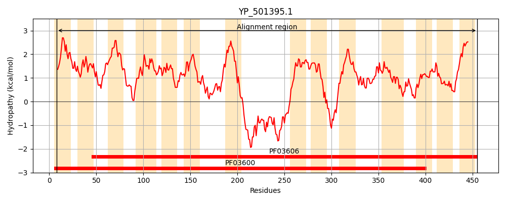
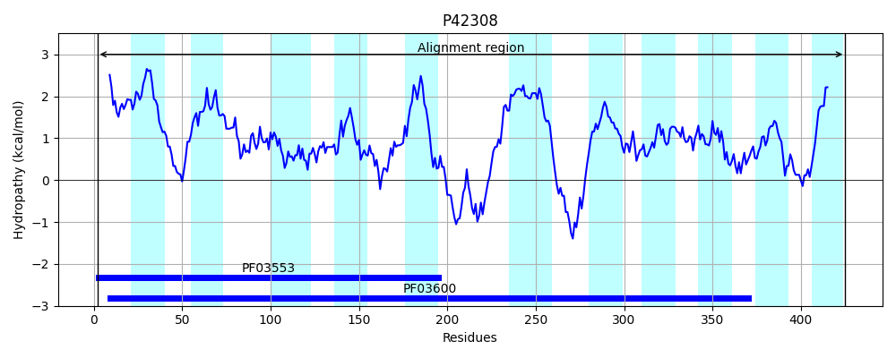
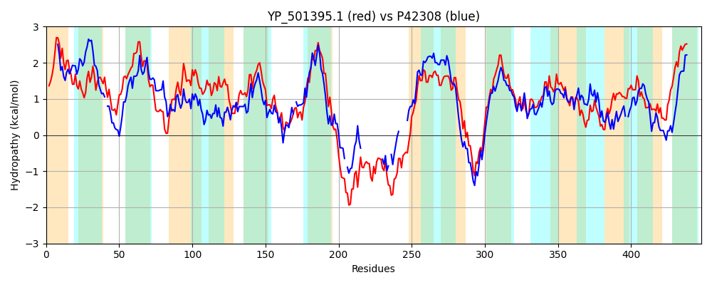

Hit Accession: P42308
Hit TCID: 2.A.11.1.2
Hit Description: gnl|BL_ORD_ID|10456 gnl|TC-DB|P42308|2.A.11.1.2 CITRATE TRANSPORTER - Bacillus subtilis.
Mach Len: 448
e:0.000000
Query TMS Count : 14
Hit TMS Count: 11
TMS-Overlap Score: 8.100000
Predicted Substrates:CHEBI:34552;barium(2+), CHEBI:34982;strontium(2+), CHEBI:3308;calcium(2+), CHEBI:5584;hydron
BLAST Alignment:
Score: 710 , Bit scores: 278 bits, E-value: 2.5e-89, Alignment length: 448, Percentage identity: 33
Query: 8 LTVMGLIIIISIVGLLIAKKINPVVGMTIIPCLGAMILGYSVTDLVGFFAKGLDQVINVVIMFIFAIIFFGIMNDSGLFKPLVKRLILMTRGNVVIVCAMTALIGTIAQLDGAGAVTFLLSIPALLPLYKALNMNKYLLILLLALSAAIMNMVPWGGPMARVAAVLKAKSVNELWYGLIPIQIIGFILVMLFAVYLGFKEQKRIKKAIERNELPQTQDIDVHKLVEVYERDQDVRFPVKGRARTKSWIKWVNTALTLAVILSMLINIAPPEFAFMIGVSLALVINFKSVDEQMERLRAHAPNALMMAAVIIAAGMFLGVLNETGMLKAIATNLIKVIPAEVGPYLHIIVGLLGVPLDLLTSTDAYYFAVLPIVEQTAGQFGVPSVSTAYSMVIGNIIGTFVSPFSPALWLAIGLAEANMGTYIKYAFFWIWGFAIVMLVIAMLMGIVT 455
L ++G +++I + L+++ +++ ++ + ++P + A+I G+ DL +G+ + IM +FAI++FGIM DSGLF PL+ +++ +G+ + + TA++ LDG G T++++I A+LPLYK L MN+ +L + L + +MN++PWGGP ARV A LK + +E++ LIP I G + V+ A LG KE+KR+ I + P + D + P+K A ++W N LT+A++ +++ ++ P FM ++AL++N+ +V EQ +R+ AHA NAL + +++ AAG+F G+L+ T M+ A+A +L+ +IP +GP+L +I ++ +P S DA+YF VLPI+ + A +G+ + + ++G + +SP P+ +L +G+A + G + K+ W G IVM + A+L+GI++
Sbjct: 2 LAILGFVMMIVFMYLIMSNRLSALIALIVVPIVFALISGFG-KDLGEMMIQGVTDLAPTGIMLLFAILYFGIMIDSGLFDPLIAKILSFVKGDPLKIAVGTAVLTMTISLDGDGTTTYMITIAAMLPLYKRLGMNRLVLAGIAMLGSGVMNIIPWGGPTARVLASLKLDT-SEVFTPLIPAMIAGILWVIAVAYILGKKERKRLG-VISIDHAPSS--------------DPEAA-PLKRPA-----LQWFNLLLTVALMAALITSLLPLPVLFMTAFAVALMVNYPNVKEQQKRISAHAGNALNVVSMVFAAGIFTGILSGTKMVDAMAHSLVSLIPDAMGPHLPLITAIVSMPFTFFMSNDAFYFGVLPIIAEAASAYGIDAAEIGRASLLGQPV-HLLSPLVPSTYLLVGMAGVSFGDHQKFTIKWAVGTTIVMTIAALLIGIIS 425 | Protein Hydropathy Plots: |
|---|
|  |  |
Pairwise Alignment-Hydropathy Plot:
|
|---|
|  |